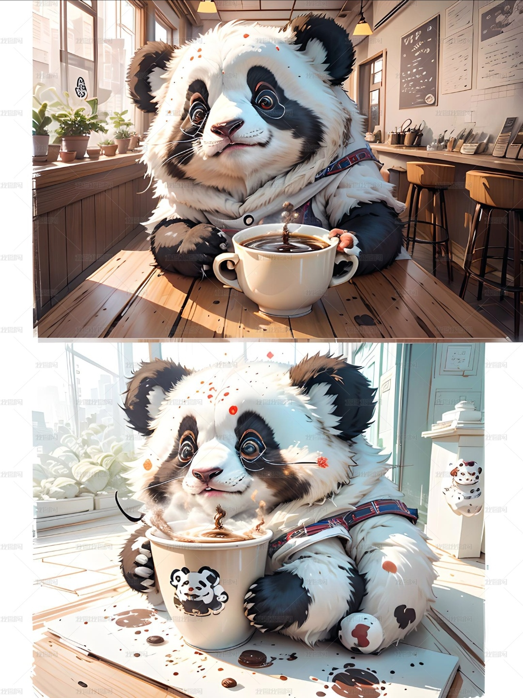

品牌理念
国宝奶咖作为一个新中式国风茶饮品牌，以原叶鲜奶为主打，覆盖纯茶、鲜果茶、纯正咖啡及周边相关衍生产品等，将东方文化与茶事传承、西方结合，打造东方新饮品，以东方茶，会世界友
品牌创始人
Miss Liu
2002.7.21
四川资阳

品牌历程
国宝奶咖于2008年在四川成都建立，最初是由还在大学时期的Miss Liu与她室友一起创业，开在大学门口的一家小奶茶店，最初名叫恋嘟奶茶，广受大学生喜爱，后逐步扩大，因主要创始人喜爱熊猫并因当时咖啡开始受国人喜爱，深受其启发，与2016年恋嘟奶茶开始销售咖啡等系列，并改店名为国宝奶咖，后更受年轻人所喜爱，逐渐做成品牌，并开始开连锁店。